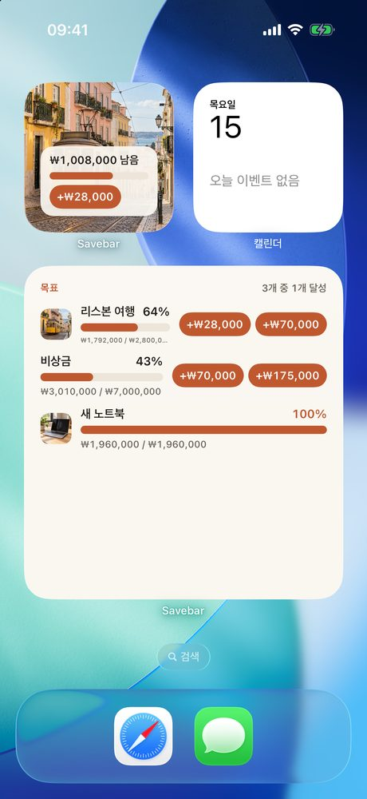

Savebar · 가이드 · 日本語
iPhone 홈 화면에 저축 목표를 두는 방법
무언가를 위해 돈을 모을 때는 눈에 보이면 더 쉬워요. 위젯은 지금까지 모은 금액과 남은 금액을 보여 주는 막대를 하루에도 여러 번 보는 곳에 두고, 한 번 탭으로 금액을 더할 수 있게 해 줘요.
아래는 Savebar로 설정하는 방법이에요. 목표 1개와 소형 위젯은 무료예요.
1. 목표 만들기
- Savebar를 열고 이 버튼을 탭하세요: +.
- 이름을 입력하고 다음 항목도 채우세요: 목표 금액.
- 선택: “목표일 정하기” 옵션을 켜면 남은 일수와 하루에 모을 금액을 볼 수 있어요.
- 선택: “링크”에 상품 링크를 붙여 넣으면 페이지에서 사진과 이름이 채워져요.
2. 위젯 버튼 금액 정하기
“위젯 버튼 금액”에 평소 모으는 금액을 입력하세요. 위젯 버튼을 탭하면 앱을 열지 않고 한 번에 그 금액이 더해져요.

3. 홈 화면에 위젯 두기
- 앱이 흔들릴 때까지 홈 화면의 빈 곳을 길게 누르세요.
- 위쪽 모서리의 “편집” (또는 +)을 탭한 다음 검색하세요: “Savebar”.
- 소형 크기를 고르고 “위젯 추가”를 탭하세요.
돈을 모을 때마다 위젯의 금액 버튼을 탭하세요. 막대와 퍼센트가 바로 그 자리에서 움직여요.

이 사진에서 여러 목표가 보이는 큰 위젯은 Savebar Pro 기능이에요.
더 필요하다면?
Savebar Pro는 구독이 아닌 한 번 구매예요:
- 목표 무제한
- 여러 목표를 보여 주는 중형·대형 위젯, 목표마다 금액 버튼 최대 2개
- 잠금 화면 위젯
- 같은 금액 버튼이 있는 Apple Watch 앱
자주 묻는 질문
은행 계좌와 연결되나요?아니요. 금액은 직접 입력하기 때문에 로그인도, 연결할 것도 없어요.
무료로 목표를 몇 개 만들 수 있나요?1개이고, 홈 화면 소형 위젯을 쓸 수 있어요. 한 번 구매하는 Savebar Pro를 사면 목표 무제한, 여러 목표를 보여 주는 중형·대형 위젯, 잠금 화면 위젯, Apple Watch 앱을 쓸 수 있어요.
버튼에 없는 금액도 넣을 수 있나요?네. 앱에서 목표를 열고 “+ 넣기”를 탭하면 원하는 금액을 입력할 수 있어요.
위젯에 표시할 목표는 어떻게 고르나요?위젯을 길게 누르고 위젯 편집을 탭한 다음 목표를 고르세요.
App Store에서 Savebar 받기
구독 없음, 광고 없음, 은행 로그인 없음, 계정 없음. · Savebar 소개
English · 日本語 · 简体中文 · 繁體中文 · 한국어 · Deutsch · Français · Español · Italiano · Nederlands · Polski · Português · Русский · ไทย · Türkçe · Українська · Tiếng Việt · Bahasa Indonesia